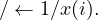

4.16 psb_geinv — Entrywise Inversion
This function computes the entrywise inverse of a vector x and puts it into
y

psb_geinv(x, y, desc_a, info, [flag)
|
|
| ∕, x, y | Function |
|
|
| Short Precision Real | psb_geinv |
| Long Precision Real | psb_geinv |
| Short Precision Complex | psb_geinv |
| Long Precision Complex | psb_geinv |
|
|
| |
Table 16: Data types
-
Type:
- Synchronous.
-
On Entry
-
-
x
- the local portion of global dense vector x.
Scope: local
Type: required
Intent: in.
Specified as: an object of type psb_T_vect_type containing numbers of
type specified in Table 2.
-
desc_a
- contains data structures for communications.
Scope: local
Type: required
Intent: in.
Specified as: an object of type psb_desc_type.
-
flag
- check if any of the x(i) = 0, and in case returns error halting the
computation.
Scope: local
Type: optional Intent: in.
Specified as: the logical value flag=.true.
-
On Return
-
-
y
- the local portion of result submatrix x.
Scope: local
Type: required
Intent: out.
Specified as: an object of type psb_T_vect_type containing numbers of
the type indicated in Table 16.
-
info
- Error code.
Scope: local
Type: required
Intent: out.
An integer value; 0 means no error has been detected.